6 Finite Automata
6.1 Regular Expressions
What regular expressions are
What kinds of patterns they can express — and what they cannot
How to use them in programming to match and manipulate strings
How are regular expressions implemented?
Given an arbitrary RE and a string, how can we determine whether the RE matches the string?
What are the basic components of regular expressions, and how do they relate to one another? For instance, some operators can be expressed in terms of others, such as e+ being equivalent to ee*.
At a fundamental level, a regular expression represents a set of strings that match the pattern, and viewing them this way provides a crucial perspective. This viewpoint will guide our approach to designing and implementing effective regular expression matching.
6.2 Alphabet, String, and Language
First, let’s review some basic concepts.
Alphabet: An alphabet is a finite set of symbols, typically denoted by Σ (the Greek letter sigma). It defines the basic building blocks used to form strings in formal languages.
Binary: Σ = {0, 1}
Decimal: Σ = {0, 1, 2, 3, 4, 5, 6, 7, 8, 9}
Alphanumeric: Σ = {0–9, a–z, A–Z}
ε denotes the empty string (written as "" in OCaml).
|s| represents the length of string s. For example, |Hello| = 5, |ε| = 0
Ø is the empty set (it has no elements). Ø ≠ {ε} and Ø ≠ ε. These are distinct concepts.
0101
0101110
ε
010111010101000010101010
Language: A language L is a set of strings formed from symbols of a given alphabet Σ. In other words, once we define an alphabet, we can describe a language as any collection of finite strings built using those symbols.
Formally:
L ⊆ Σ*Here, Σ* (read “Sigma star”) represents the set of all possible strings, including the empty string ε, that can be constructed using symbols from Σ.
Example 1: All strings of length 1 or 2 over the alphabet Σ = {a, b, c} that begin with a:
L1 = { a, aa, ab, ac }Example 2: All strings over Σ = {a, b}:
This is the language Σ* itself — that is, all possible strings (of any length) over the alphabet {a, b}.L2 = { ε, a, b, aa, bb, ab, ba, aaa, bba, aba, baa, … }Example 3: A language can also represent a real-world set of strings. For instance, the set of valid phone numbers over the alphabet Σ = {0, 1, 2, 3, 4, 5, 6, 7, 8, 9, (, ), -}:
L3 = {"(301)405-1000", "(202)555-0182", "410-555-7890", … }
Are all strings over the alphabet Σ = {0, 1, 2, 3, 4, 5, 6, 7, 8, 9, (, ), -} included in the language L3?
No. Not every string over this alphabet forms a valid phone number. For example, the string "(((((((—
— " uses only symbols from Σ but does not represent a valid phone number, so it is not in L₃. Is there a regular expression that describes L3?
Yes. The language L3, representing valid phone numbers, can be expressed using the regular expression: \(\d{3}\)\d{3}-\d{4}. This pattern matches strings in the form (XXX)XXX-XXXX, where each X is a digit.
6.2.1 The Set of All Valid (Runnable) OCaml Programs
Consider the language of all valid OCaml programs — that is, every possible sequence of characters that forms a syntactically correct and executable OCaml program. Each valid program (for example, print_endline "Hello";;) can be viewed as a string over a suitable alphabet that includes letters, digits, punctuation, and symbols used in the OCaml language.
This collection of all syntactically correct programs forms a language in the formal sense — a set of strings over an alphabet that satisfy certain grammatical rules (in this case, the OCaml grammar).
Later in the course, we will learn how such programming language grammars can be formally specified using tools more expressive than regular expressions. While regular expressions are powerful for describing many kinds of string patterns (like tokens, identifiers, or numbers), they are not sufficient to describe the full syntax of programming languages such as OCaml. To handle nested structures (like parentheses, let-bindings, or function definitions), we need more powerful formalisms such as context-free grammars (CFGs).
6.3 Operations on Languages
Union (L₁ ∪ L₂): Strings that belong to either L₁ or L₂.
Concatenation (L₁ · L₂): All strings formed by taking a string from L₁ followed by a string from L₂.
Kleene Star (L*): All strings formed by concatenating zero or more strings from L.
Concatenation L1L2 creates a language defined as:
L1L2 = { xy | x ∊ L1 and y ∊ L2}
Union creates a language defined as
L1 ∪ L2 = { x | x ∊ L1 or x ∊ L2}
Kleene closure creates a language is defined as L* = { x | x = ε or x ∊ L or x ∊ LL or x ∊ LLL or …}
Here is an Example:
Let L1 = { a, b }, L2 = { 1, 2, 3 } (and Σ = {a,b,1,2,3})
L1L2: { a1, a2, a3, b1, b2, b3 }
L1 ∪ L2: { a, b, 1, 2, 3 }
L1* : { ε, a, b, aa, bb, ab, ba, aaa, aab, bba, bbb, aba, abb, baa, bab, … }
6.4 Regular Languages
In theoretical computer science and formal language theory, a regular language is a formal language that can be described using a regular expression (RE).
Regular expressions represent regular languages. They are not merely a convenient tool for describing string patterns — they have a precise mathematical meaning. Each regular expression corresponds to a specific regular language, which is the set of all strings that match the expression.
In short, regular expressions provide a formal notation for defining regular languages. When we write a regular expression such as:
(a∣b)*abWhile regular expressions is powerful, not every language can be described by a regular expression. Some languages are simply too complex to be captured by the limited memory of a finite automaton.
Palindromes over Σ: The set of all strings that read the same forwards and backwards (e.g., abba, 0110). Recognizing palindromes requires remembering the first half of the string to compare with the second — something a finite automaton cannot do.
L = { aⁿbⁿ | n > 0 }: The set of strings with an equal number of a’s followed by b’s, such as ab, aabb, aaabbb, etc. This language is not regular because it requires counting — another task beyond the capability of finite automata.
Programming Languages: Most programming languages (like OCaml, Python, or C) are not regular, since their syntax involves nested structures and dependencies (e.g., matching parentheses, block scopes). However, some components of these languages are regular, such as identifiers, numbers, or simple tokens.
Despite these limits, regular expressions remain extremely useful, especially in lexical analysis — the first stage of program compilation where the source code is broken into tokens. Tools like lex, flex, and many modern regex libraries use regular expressions to describe and recognize these patterns.
6.5 Semantics of Regular Expressions
- Base cases:
ε — represents the language {ε}, which contains only the empty string.
∅ — represents the empty language, containing no strings.
For each symbol a ∈ Σ, a is a regular expression denoting the language {a}.
- Inductive (recursive) cases: If A and B are regular expressions representing the languages L(A) and L(B), then the following are also regular expressions:
Regular Expression
Denoted Language
A | B
Union: L(A) ∪ L(B)
A · B
Concatenation: L(A)L(B)
A*
Kleene star: L(A)*
Regular expressions apply operations to symbols to generate a set of strings, also known as a language. (A formal definition will follow.)
a generates the language {a}
a | b generates the language {a} ∪ {b} = {a, b}
a* generates the language {ε} ∪ {a} ∪ {aa} ∪ … = {ε, a, aa, …}
If a string s ∈ L, where L is the language generated by a regular expression r, we say that r accepts, describes, or recognizes the string s.
OCaml – concatenation of single-symbol REs
(OCaml|Rust) – union of OCaml and Rust
(OCaml)* – Kleene closure
(OCaml)+ – same as (OCaml)(OCaml)*
(Ocaml)? – same as (ε|(OCaml))
[a-z] – same as (a|b|c|...|z)
[^0-9] – same as (a|b|c|...) for a,b,c,... ∈ Σ - {0..9}
^, $ – correspond to extra symbols in alphabet
Think of every string containing a distinct, hidden symbol at its start and at its end – these are written ^ and $
6.6 Implementing Regular Expressions
Regular expressions can be implemented by converting them into an equivalent finite automaton — a computational model that recognizes exactly the same set of strings described by the expression.
In essence, a finite automaton serves as a machine that reads an input string symbol by symbol and determines whether it belongs to the regular language defined by the regular expression.
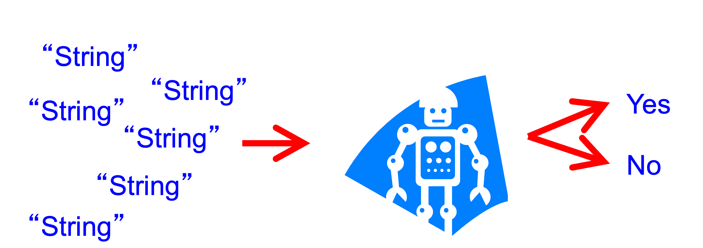
Simply put, to determine whether an input string matches a pattern, we first build a small machine based on the pattern. Then, we feed the string into the machine — if the machine accepts it, the string matches; if it rejects it, the string does not match.
Thus, every regular expression corresponds to a finite automaton, and every finite automaton defines a regular language.
6.6.1 Finite State Machine
A Finite-State Machine (FSM) — also known as Finite-State Automaton (FSA), Finite Automata, or simply a State Machine — is a mathematical model of computation. It represents an abstract machine that can be in one and only one state at any given time.
In class, the terms FSM, FSA, and FA are all used to refer to a finite-state machine.
The machine can change from one state to another in response to certain inputs. Such a change is called a transition.
A finite set of states
A start (initial) state
A set of input symbols (alphabet)
A transition function that describes how states change in response to inputs
In summary, the FSM processes inputs one at a time, moving through states according to its transition rules. For example, consider the finite-state machine shown below:
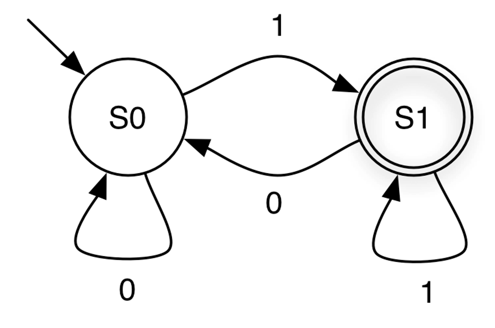
States are represented by circles, and transitions are represented by arrows.
Set of states: {S0, S1}
Start state: S0. — The state where the automaton begins computation. It is indicated by an incoming arrow with no origin. There is only one start state.
Final (accepting) state: S1 — denoted by the double circles. There may be zero or multiple final states in general. Any state, including the start state, can be final
Input symbols: {0,1}
Transitions: {(S0, 0, S0), (S0, 1, S1), (S1, 1, S1), (S1, 0, S0)} - Each transition specifies how the automaton moves from one state to another when reading a particular input symbol.
The FSM’s next state depends only on its current state and the current input symbol, not on the sequence of inputs that led to the current state. In other words, the machine has no memory of past inputs beyond the current state it is in.
Now, let’s explain how a Finite Automaton processes an input string.
The machine begins in the start (initial) state.
- It processes the input string symbol by symbol until the end of the string is reached:
Read the next symbol σ ∈ Σ from the string.
Follow the transition edge labeled with σ to the next state.
After the entire string has been read, the string is accepted if the automaton is in a final (accepting) state; otherwise, it is rejected.
Starting at S0, the first input 0 keeps the machine in S0.
The next input 0 also keeps it in S0.
The next symbol 1 causes a transition from S0 to S1.
The following 0 moves the machine from S1 back to S0.
The next 1 transitions it to S1, and the final 1 keeps it in S1.
After processing all input symbols, the machine ends in S1, which is a final (accepting) state. Therefore, the input string “0 0 1 0 1 1” is accepted by the FSM.
After processing all the input symbols, the FSM ends in S0, which is a rejecting state.
The final state the machine reaches after processing the input.
Whether the finite state machine (FSM) accepts or rejects the input.
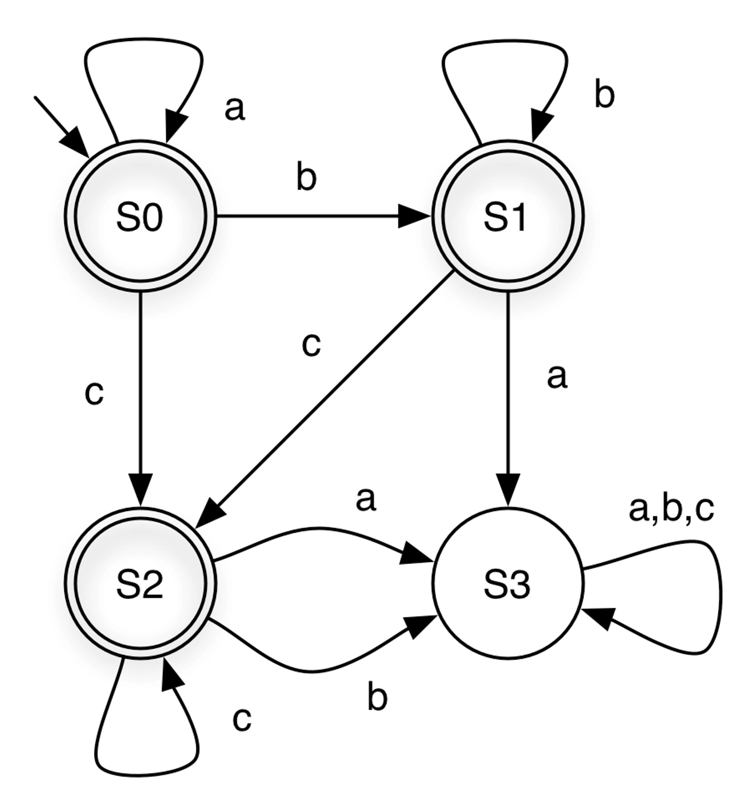
Input String | State at end | Accepts? |
aabcc | S2 | Yes |
acca | S3 | No |
aacbbb | S3 | No |
ε | S0 | Yes |
From the FSM above, notice that state S3 has no outgoing transitions. This means that once the machine enters S3, it cannot leave. Such a state is called a dead state.
Quiz: Based on the examples, what do you think is the language recognized by the FSM above?
The FSM accepts all strings that can be generated by the regular expression a*b*c*.
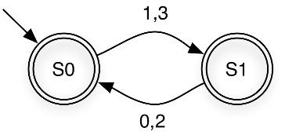
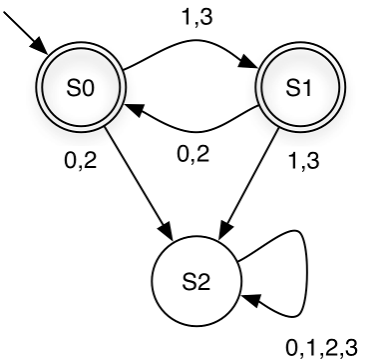
Quiz: What do you think is the language recognized by the FSM above?
Strings over Σ = {0,1,2,3} in which even and odd digits alternate, starting with an odd digit. For example, it accepts 1032 and 3020, but rejects 1120 and 3221.
In a finite state machine, each state represents what has occurred so far.
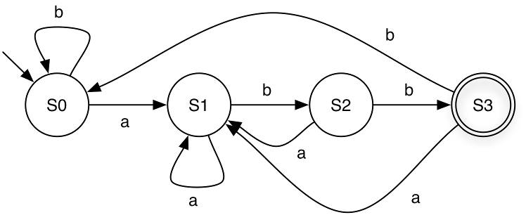
For example, in the machine above, each state can be interpreted as follows:S0 = “No input has been seen yet” OR “The last symbol seen was b”
S1 = “The last symbol seen was a”
S2 = “The last two symbols seen were ab”
S3 = “The last three symbols seen were abb”
Quiz: Based on the examples, what do you think is the language recognized by the FSM above?
The FSM accepts all strings that can be generated by the regular expression (a|b)*abb over the alphabet Σ={a,b}
6.7 FSM Exercises
Define an FSM over Σ = {0,1} that accepts strings with an odd number of 1s.
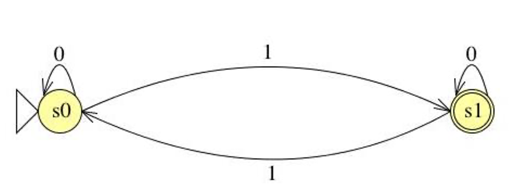
Define an FSM over Σ = {a,b} that accepts strings containing an even number of a’s and any number of b’s
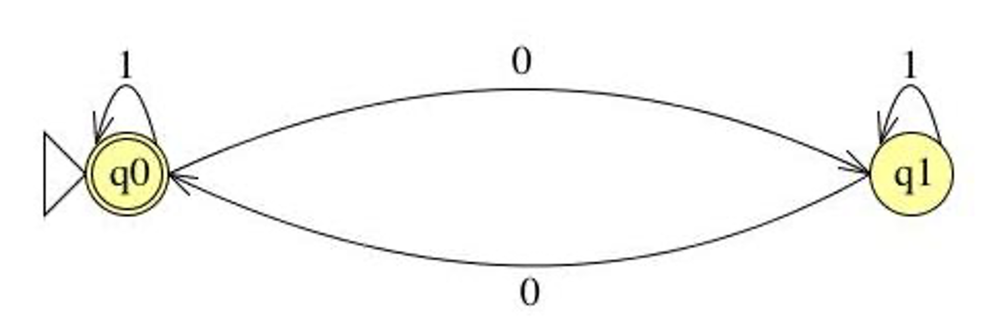
Define an FSM over Σ = {0,1} that accepts strings containing two consecutive 0s followed by two consecutive 1s.
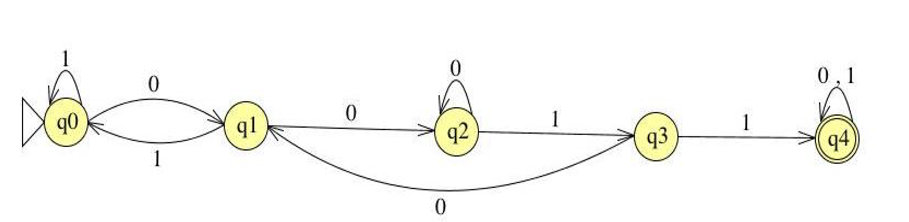
Define an FSM over Σ = {0,1} that accepts strings END with two consecutive 0s followed by two consecutive 1s.
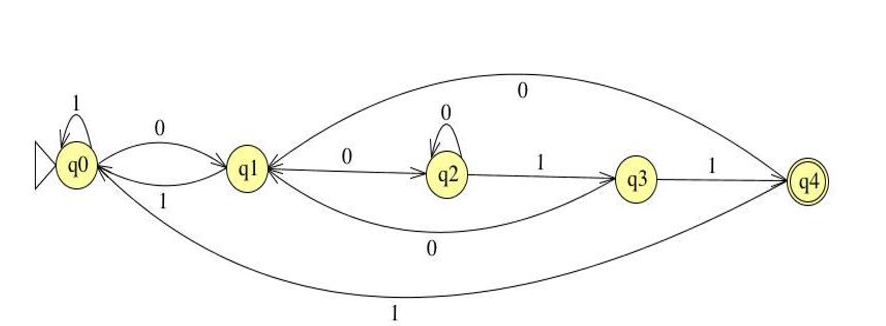
Define an FSM over Σ = {0,1} that accepts strings containing an odd number of 0s and odd number of 1s.
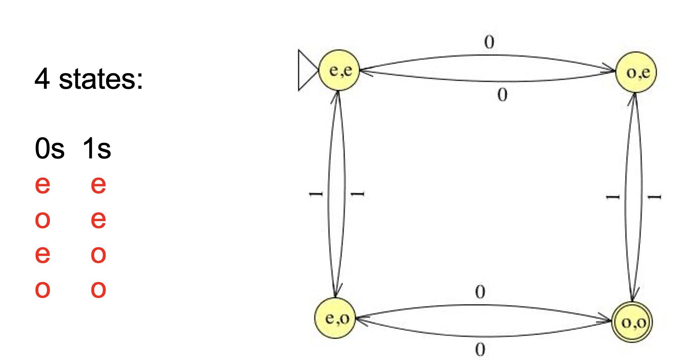
6.8 DFA and NFA
Finite-State Machines (FSMs) are divided into two types: Deterministic Finite Automata (DFA) and Non-deterministic Finite Automata (NFA). A DFA has exactly one possible sequence of transitions for each input string, making it straightforward to check for acceptance. In contrast, an NFA can have multiple possible paths for a single input string and accepts if any of these paths reach a final state by the end of the input. While NFAs tend to be more compact than DFAs, testing whether a string is accepted can be more computationally expensive.
6.8.1 Deterministic Finite Automaton (DFA)
A DFA is a finite-state machine in which each state and input symbol pair has exactly one next state.
It reads input symbols one at a time and moves deterministically from one state to the next.
An input string is accepted if the machine ends in a final state after processing all input symbols.
Example:
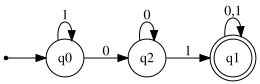
- Formally, A deterministic finite automaton (DFA) is a 5-tuple (Σ, Q, q0, F, δ) where
Σ is an alphabet
Q is a nonempty set of states
q0 ∊ Q is the start state
F ⊆ Q is the set of final states
δ : Q x Σ → Q specifies the DFA’s transitions
A DFA accepts s if it stops at a final state on s.
For example, the DFA below can be represented as:
Σ = {0, 1} Q = {S0, S1} q0 = S0 F = {S1} δ = {(S0,0,S0), (S0,1,S1),(S1,0,S0), (S1,1,S1) }We can also represent the transitions as a table, called transition table:
States
0
1
S0
S0
S1
S1
S0
S1
6.8.2 Nondeterministic Finite Automaton (NFA)
An NFA is a finite-state machine in which a state and input symbol pair can lead to zero, one, or multiple next states.
NFAs may include epsilon (ε) transitions, allowing the machine to move to another state without consuming any input.
It reads input symbols one at a time and can branch into multiple possible paths simultaneously.
An input string is accepted if any path leads to a final state.
Example:
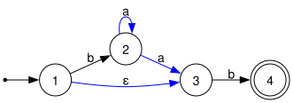
Each transition is a triple (current state, input symbol or ε, next state)
For a given state and input (or ε), the NFA may move to one or more possible next states.
Since δ is a subset, it allows multiple transitions for the same (state, input) pair, or even no transitions at all.
Below are the DFA and NFA that recognize the regular language described by the regular expression (a|b)*abb.
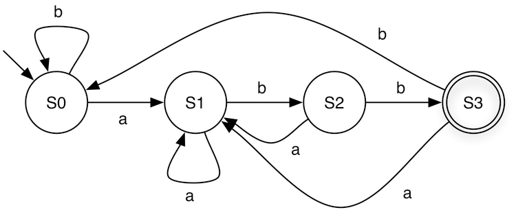
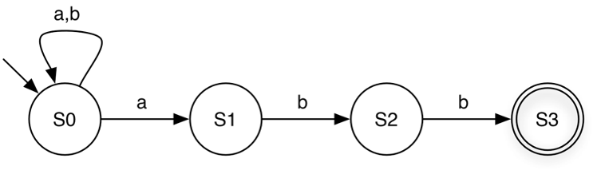
When processing the string babaabb, the DFA follows a single deterministic path, whereas the NFA can follow multiple paths reaching different states. One of these paths reaches S3, resulting in the string being accepted.Now, let us use the NFA below to accept the strings aba and ababa:
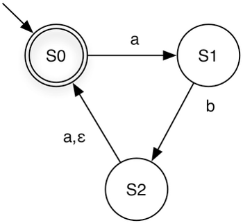
aba: S0 → S1 → S2 → S0
ababa: S0 → S1 → S2 (via epsilon) → S0 → S1 → S2 → S0
If we consume the input a on the transition from S2 to S0, the NFA will reject the string.
Due to the flexibility of NFAs, for a given regular language, an NFA is often smaller than the corresponding DFA. The DFA and NFA below both represent the same regular language, (ab|aba)*.
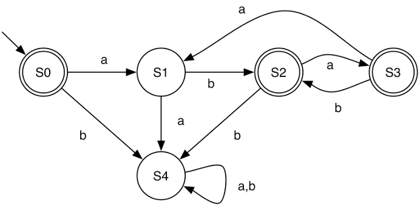
6.9 Relating REs to DFAs and NFAs
Regular expressions, NFAs, and DFAs all accept the same class of languages, and it is possible to convert between them:
RE → NFA → DFA → RE
Directly converting a regular expression into a DFA is often not straightforward or intuitive. However, there is a simple algorithm to convert a regular expression into an NFA. While an NFA can accept inputs, its non-deterministic behavior can make this process slower. To efficiently decide whether a string is accepted, we can convert the NFA into a DFA, which provides a deterministic method for checking acceptance.
In the next section, we will learn how to reduce a regular expression to an NFA and how to convert NFAs into DFAs.
6.10 Reducing Regular Expressions to NFAs
Given a regular expression A, our goal is to construct an equivalent NFA, denoted as ⟨A⟩ = (Σ, Q, q₀, F, δ).
Regular expressions are defined recursively from primitive RE languages. Each component of a regular expression corresponds to a small NFA fragment, and these fragments are combined according to the operators used in the expression.
Throughout the construction, we maintain the invariant |F| = 1, meaning that each NFA we build will have exactly one final state.
We will define <A> for base cases: σ , ε , ∅ where σ is a symbol in Σ and and for inductive cases: AB, A|B, A*
Recall: NFA is (Σ, Q, q0, F, δ)
where
Σ is the alphabet
Q is set of states
q0 is starting state
F is set of final states
δ is transition relationFor a single symbol σ, we construct an NFA with two states: the start state and the final state. The start state transitions to the final state on input σ.
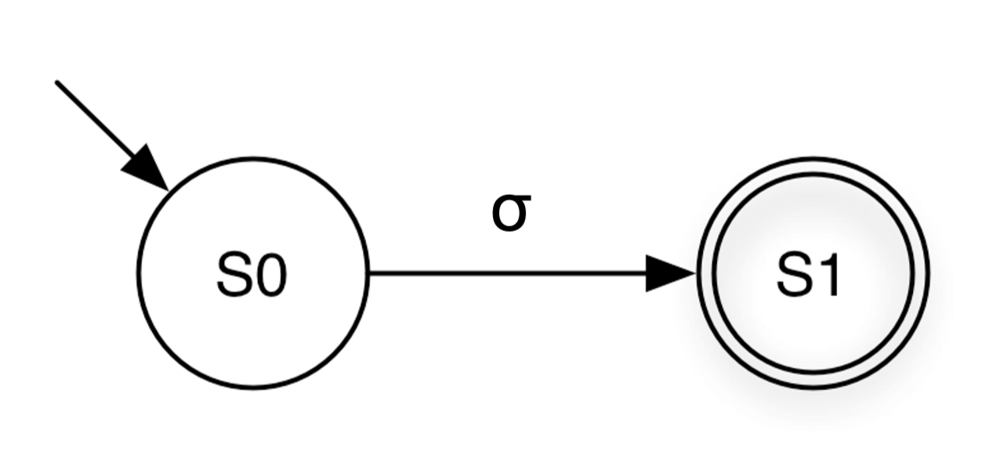
<σ> = ({σ}, {S0, S1}, S0, {S1}, {(S0, σ, S1)} )
( Σ, Q, q0, F, δ )Base case: ε
To recognize ε, the empty string, we create an NFA with a single state that serves as both the start and the final state.
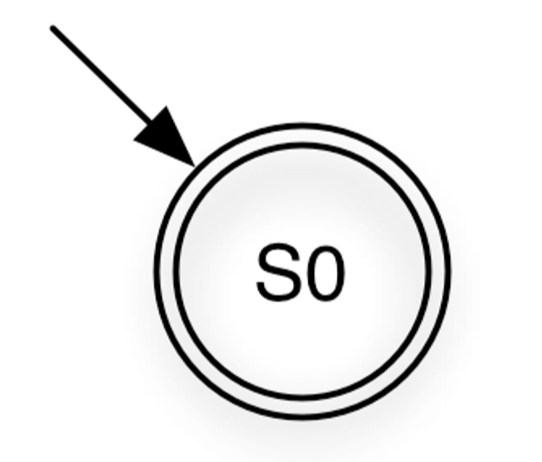
<ε> = (∅, {S0}, S0, {S0}, ∅)Base case: ∅ To represent the empty set (∅), we construct an NFA with two states: a start state and a final state. There are no transitions between them, so the final state is unreachable from the start state. This automaton accepts no strings.
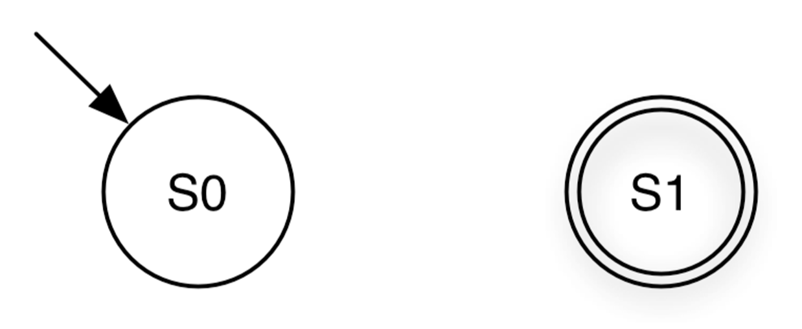
<∅> = (∅, {S0, S1}, S0, {S1}, ∅)Now, let us look at the inductive cases.
Concatenation
Given a machine A and B, we want to build a concatenation AB.
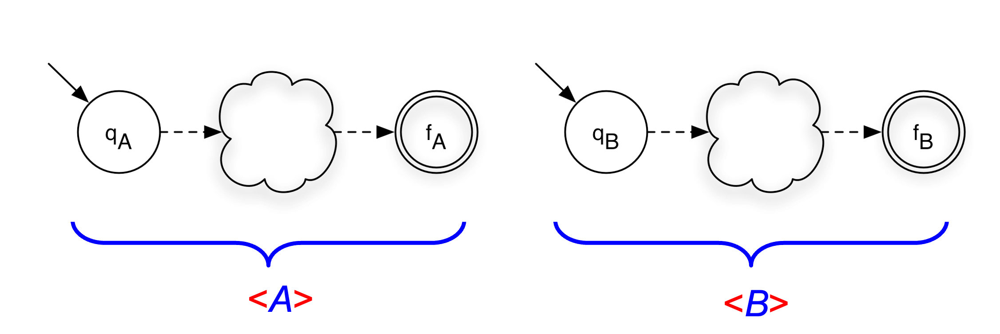
<A> = (ΣA, QA, qA, {fA}, δA)
<B> = (ΣB, QB, qB, {fB}, δB)We construct the new NFA by adding an ε-transition from the final state of A to the start state of B. The start state of the combined NFA is the start state of A, and the final state is the final state of B.
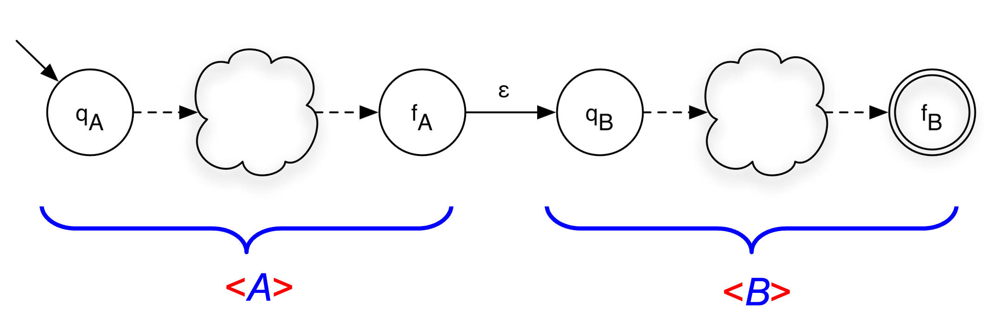
<A> = (ΣA, QA, qA, {fA}, δA)
<B> = (ΣB, QB, qB, {fB}, δB)
<AB> = (ΣA ∪ ΣB, QA ∪ QB, qA, {fB}, δA ∪ δB ∪ {(fA,ε,qB)} )Union
Given a machine A and B, we want to build a union A|B.
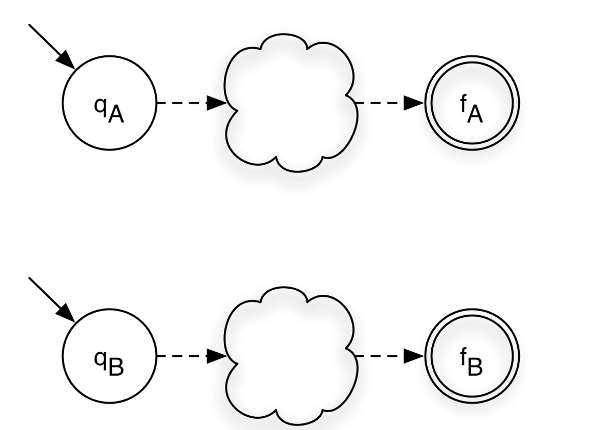
<A> = (ΣA, QA, qA, {fA}, δA)
<B> = (ΣB, QB, qB, {fB}, δB)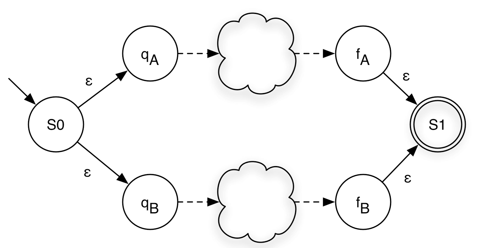
<A|B> = (ΣA ∪ ΣB, QA ∪ QB ∪ {S0,S1}, S0, {S1},
δA ∪ δB ∪ {(S0,ε,qA), (S0,ε,qB), (fA,ε,S1), (fB,ε,S1)})Closure (Kleene Star)
Given a machine A and B, we want to build A*.
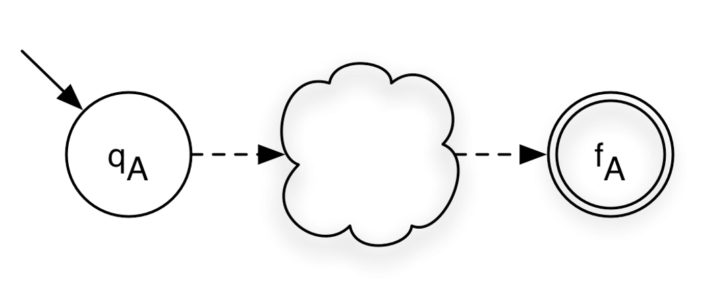
<A> = (ΣA, QA, qA, {fA}, δA)a new start state S0
a new final state S1
ε-transitions from S0 to the starts state of A
ε-transition from the final state of A the new final state S1
ε-transition from S0 to S1
ε-transition from S1 to S0
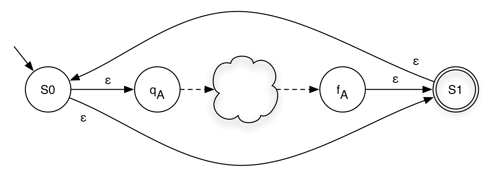
<A*> = (ΣA, QA ∪ {S0,S1}, S0, {S1},
δA ∪ {(fA,ε,S1), (S0,ε,qA), (S0,ε,S1), (S1,ε,S0)})6.10.1 RE to NFA Examples
RE: ab
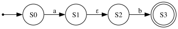
RE: ab | cd
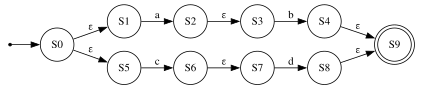
RE: (ab)*
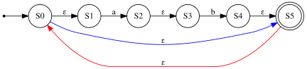
RE: ab*|cd
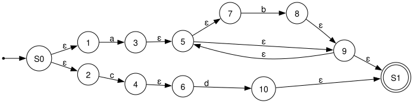
6.11 NFA to DFA Conversion
So far, we have seen how to construct an NFA from a regular expression. NFAs are more flexible and easier to build, but DFAs are generally more efficient to simulate. Fortunately, these two models are equally expressive:
Theorem: For every NFA N = (Σ, Q, q0, F, δ) accepting some language L ⊆ Σ*, there exists a DFA D = (Σ, Q’, q’0, F’, δ’) such that L(N) = L(D).
In other words, NFAs and DFAs recognize exactly the same class of languages. To take advantage of DFA efficiency during acceptance checking, we can convert any NFA into an equivalent DFA.
In this section, we will introduce the algorithm to reduce an NFA to a DFA. The algorithm is called subset construction algorithm. It converts an NFA into an equivalent DFA. The core idea is that while an NFA can be in multiple states simultaneously (due to nondeterminism and ε-transitions), a DFA can simulate this by tracking the set of all NFA states that could be active at any point. Each such set becomes a single DFA state — hence the name "subset construction."
Given NFA (Σ, Q, q0, Fn, δ), the algorithm produces DFA (Σ, R, r0, Fd, δ’).
6.11.1 Subroutines
The algorithm relies on two helper functions:
- ε-closure(δ, p) — returns the set of all NFA states reachable from state p using only ε-transitions (zero or more), without consuming any input symbol. This captures all the "free moves" an NFA can make. When applied to a set of states Q, it is the union of ε-closures of each state in Q.
ε-closure(δ, p) = {q | (p, ε,q) ∈ δ }
ε-closure(δ, Q) = { q | p ∈ Q, (p, ε,q) ∈ δ }
Notes: ε-closure(δ, p) always includes p
Example:
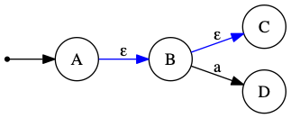
Then ε-closure(δ, A) = {A, B, C} — starting at A, we follow ε to B, then ε to C. D is not included because reaching it requires consuming input a, not an ε-transition. move(δ, Q, σ) — returns the set of all NFA states reachable from any state in set Q by reading exactly one symbol σ.
move(δ, p, σ) = { q | (p, σ, q) ∈ δ}
move(δ, Q, σ) = { q | p ∈ Q, (p, σ, q) ∈ δ}
Note: move(δ, p, σ) = Ø when no transition (p, σ, q) ∈ δ exists for any q.
Example:
Using the same NFA from above:move(δ, {B}, a) = {D} — B has an a-transition to D.
move(δ, {A, B}, a) = {D} — A has no a-transition; B reaches D, so the union is {D}.
move(δ, {A}, a) = Ø — A has no a-transition (only an ε-transition to B).
6.11.2 The Subset Construction Algorithm
Let r0 = ε-closure(δ, q0) ; DFA start state = ε-closure of NFA start state
add r0 to R ; R is the set of DFA states discovered so far
While ∃ an unmarked state r ∈ R:
Mark r ; "marked" means we have processed this state
For each σ ∈ Σ:
Let m = move(δ, r, σ) ; NFA states reachable from r by reading σ
Let e = ε-closure(δ, m) ; then take all free ε-moves
If e ∉ R:
Let R = R ∪ {e} ; e is a new DFA state we haven't seen yet
Let δ' = δ' ∪ {(r, σ, e)} ; record DFA transition r --σ--> e
Let Fd = { r | ∃ s ∈ r with s ∈ Fn } ; DFA final states6.11.3 Step-by-Step Explanation
6.11.3.1 Initialization
The DFA’s start state r0 is ε-closure(δ, q0): starting at the NFA’s start state, immediately follow any ε-transitions to get the full set of states the NFA "begins in." This set is added to R as the first (unmarked) DFA state.
6.11.3.2 Main Loop
While there is any DFA state r in R that has not yet been processed (marked), pick one and mark it. Then, for every alphabet symbol σ:
move: Find every NFA state reachable from any member of r by consuming σ. Call this set m.
ε-closure: Expand m by following all ε-transitions from each state in m. Call the result e.
New state? If e has not been seen before, add it to R as a new (unmarked) DFA state.
Record transition: Add the edge r –σ–> e to the DFA’s transition function δ’.
The loop terminates because R only ever grows by adding subsets of the finite NFA state set Q. There are at most 2^|Q| possible subsets.
6.11.3.3 Final States
A DFA state r (which is a set of NFA states) is a final/accepting state if it contains at least one NFA accepting state. This ensures the DFA accepts a string whenever the NFA could have accepted it via some path.
6.11.4 Why This Works
The DFA state r represents "the NFA could currently be in any of these states." When the DFA reads symbol σ from state r, it moves to the state that represents all NFA states reachable by reading σ and then following ε-transitions. Because move and ε-closure capture every possible NFA path, the DFA faithfully simulates all NFA executions in parallel.
6.11.5 Complexity
An NFA with n states can produce up to 2^n DFA states in the worst case (one for each subset of Q). In practice, most subsets are often unreachable, so the resulting DFA is typically much smaller.
6.11.6 NFA to DFA: Example 1
NFA:
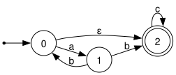
States | a | b | c |
{0,2} | 1 | Ø | 2 |
1 | Ø | {0,2} | Ø |
2 | Ø | Ø | 2 |
DFA:
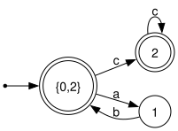
6.11.7 NFA to DFA: Example 2
NFA:
States | a | b |
{1,3} | Ø | {2,4} |
{2,4} | {2,3} | Ø |
{2,3} | {2,3} | 4 |
4 | Ø | Ø |
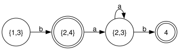
6.11.8 NFA to DFA: Example 3
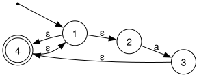
States | a |
{1,2,4} | {1,2,3,4} |
{1,2,3,4} | {1,2,3,4} |
DFA:
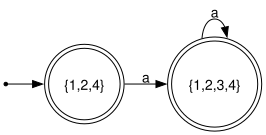
6.11.9 NFA to DFA: Example 4
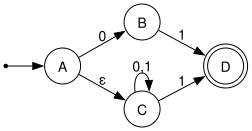
States | 0 | 1 |
{A,C} | {B,C} | {C,D} |
{B,C} | C | {C,D} |
C | C | {C,D} |
{C,D} | C | {C,D} |
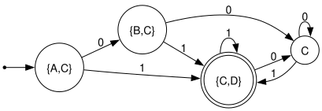
6.11.10 NFA to DFA: Example 5
NFA:
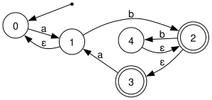
States | a | b |
0 | {0,1} | Ø |
{0,1} | {0,1} | {2,3} |
{2,3} | {0,1} | {2,3,4} |
{2,3,4} | {0,1} | {2,3,4} |
DFA:
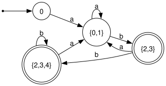
6.11.11 NFA to DFA: Example 6
Language: (a|b)*bb
NFA:
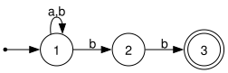
States | a | b |
1 | 1 | {1,2} |
{1,2} | 1 | {1,2,3} |
{1,2,3} | 1 | {1,2,3} |
DFA:
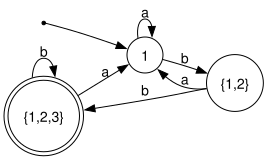
6.12 Recap: Matching a Regular Expression
Given a regular expression R, the full matching pipeline works as follows:
Construct an NFA from R. This takes O(|R|) time and produces an NFA with at most O(|R|) states.
Convert the NFA to a DFA using subset construction. In the worst case this takes O(2^|R|) time, but in practice the number of reachable DFA states is much smaller.
Use the DFA to accept or reject an input string s. Assuming δ(q, σ) can be computed in constant time, processing s takes O(|s|) time — optimal for a string-scanning algorithm.
The key insight is that DFA construction is a one-time, offline cost. Once the DFA is built, every subsequent string can be accepted or rejected in linear time with no backtracking.
6.13 Minimizing DFA: Hopcroft Reduction
A DFA produced by subset construction is often larger than necessary — it may contain states that are behaviorally identical. DFA minimization finds the smallest equivalent DFA by merging indistinguishable states.
6.13.1 Intuition
Two states are distinguishable if there exists some string that leads to an accepting state from one but not the other. States that are not distinguishable by any input are equivalent and can be safely merged.
The key observation: if states x and y end up in different accept/non-accept outcomes on the same input, they must be in different equivalence classes.
6.13.2 Algorithm
Construct the initial partition. Split all states into two groups: accepting states F and non-accepting states Q \ F.
Iteratively refine partitions. For each partition group and each symbol σ ∈ Σ, check whether all members transition into the same partition. If not, split the group into sub-groups that agree on their σ-destination partition.
Repeat until no partition can be split further (fixed point).
Build the minimal DFA. Each final partition becomes one state. Update transitions accordingly and remove any dead (unreachable) states.
Two states x and y end up in the same partition if and only if, for every σ ∈ Σ, δ(x, σ) and δ(y, σ) belong to the same partition.
6.13.3 Example: Minimizing a 4-State DFA
Consider the DFA over Σ = {a, b} that accepts all strings ending in ’b’. A straightforward construction gives four states:
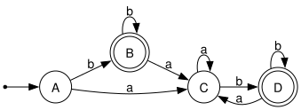
States B and D are both accepting; states A and C are both non-accepting. Apply the algorithm:
Initial partition: P₀ = {{B, D}, {A, C}}.
- Refine {B, D}:
On a: B → C and D → C — both land in {A, C}. ✓
On b: B → B and D → D — both stay in {B, D}. ✓
No split needed. - Refine {A, C}:
On a: A → C and C → C — both in {A, C}. ✓
On b: A → B and C → D — both in {B, D}. ✓
No split needed. Fixed point reached. Final partition: {{B, D}, {A, C}}.
Merging B and D into [BD], and A and C into [AC], yields the minimal 2-state DFA:
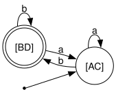
This minimal DFA correctly accepts exactly the strings over {a, b} that end in b, using only two states instead of four.
6.14 Complement of DFA
Given a DFA D = (Σ, Q, q0, F, δ) accepting language L, its complement is a DFA that accepts exactly Σ* \ L — every string not in L.
Algorithm:
Complete the DFA. Add a non-accepting dead state and add explicit transitions to it for every (state, symbol) pair that has no transition defined. This ensures δ is total — every state has a transition for every symbol in Σ.
Flip accepting and non-accepting states. Every state in F becomes non-accepting, and every state not in F becomes accepting.
The result is a valid DFA for Σ* \ L.
Why this only works for DFAs: An NFA may have multiple active states or no active state at all on a given input. Flipping accept/reject on individual NFA states does not correctly complement the language — you would first need to convert the NFA to a DFA, then apply the complement construction.
6.14.1 Example: Complementing a DFA
Consider the DFA over Σ = {a, b} that accepts all strings containing "aa" as a substring. It has three states: q0 (no ’a’ seen), q1 (one ’a’ seen), and q2 (accepting sink — "aa" seen).
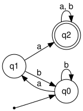
The DFA is already complete — every (state, symbol) pair has a defined transition, so no dead state needs to be added.
Applying the complement: flip q2 from accepting to non-accepting, and flip q0 and q1 from non-accepting to accepting:
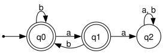
The resulting DFA accepts exactly the strings over {a, b} that do not contain "aa" — i.e., strings where no two consecutive as appear. For example, ε, b, ab, bab, and aba are accepted, while aa, baa, and aab are rejected.
6.15 Summary of Regular Expression Theory
The three formalisms — regular expressions, NFAs, and DFAs — are all equivalent: they describe exactly the same class of languages, called the regular languages. This section covered the full chain of constructions that establish this equivalence.
Regular Expressions → NFA (Thompson’s Construction). Every operator in a regular expression (concatenation, union |, closure *) has a corresponding NFA construction using ε-transitions. The resulting NFA has O(|R|) states.
NFA → DFA (Subset Construction). Each DFA state represents a set of NFA states. The two key subroutines are ε-closure (follow all free ε-transitions) and move (read one symbol). The worst-case DFA size is O(2^|Q|), but reachable states are typically far fewer.
DFA Minimization (Hopcroft’s Algorithm). Merge indistinguishable states by iteratively refining a partition of Q into equivalence classes. States in the same class behave identically on all inputs. The result is the unique smallest DFA for the language.
DFA Complementation. Complete the DFA (add a dead state for missing transitions), then flip every accepting state to non-accepting and vice versa. This produces a DFA for Σ* \ L. The construction requires a DFA — it does not apply directly to NFAs.
6.16 Optional Reading: Machines and Languages
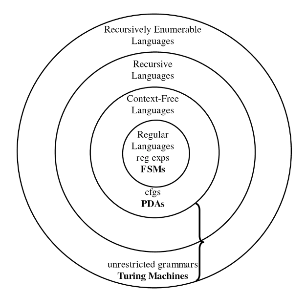
This diagram represents the hierarchy of formal language classes in the theory of computation, showing how different types of languages and their corresponding computational models relate to each other.
In the diagram, each inner set is a ubset of the outer sets. The hierarchy illustrates increasing expressive power and computational complexity, starting with FSMs at the core and extending to Turing machines at the outermost level. Machines higher in the hierarchy can recognize more complex languages and possess greater computational power and complexity.
6.16.1 Languages
- Regular Languages
These are the simplest class of languages.
They can be described by regular expressions or recognized by finite state machines (FSMs).
Examples: strings matching simple patterns like (a|b)* or 0*1*.
- Context-Free Languages
A broader class that includes languages generated by context-free grammars (CFGs).
Recognized by pushdown automata (PDAs), which are like FSMs but with a stack for memory.
Useful for describing programming languages’ syntax.
- Recursive Languages
These languages are decided by Turing machines that always halt (deciders).
They are more general than context-free languages and include all languages for which membership can be decided algorithmically in finite time.
- Recursively Enumerable Languages
This is the largest class in the diagram.
These languages can be recognized by Turing machines, but the machines may not halt for strings not in the language.
Includes all languages where membership can be semi-decided (if the string is in the language, the machine eventually accepts, but it may run forever otherwise).
- Unrestricted Grammars
Grammars without restrictions generate recursively enumerable languages.
Equivalent in power to Turing machines.
6.16.2 Machines
Here’s the role of each computational machine in the language hierarchy, explaining what kind of languages they recognize or decide:
- Finite State Machines (FSMs)
Role: Recognize Regular Languages.
- Capabilities:
Use a finite amount of memory (just states).
Can process input by moving between states based on input symbols.
Cannot remember counts or nested structures.
Examples: Pattern matching, simple token recognition in text.
- Pushdown Automata (PDAs)
Role: Recognize Context-Free Languages.
- Capabilities:
Like FSMs but equipped with a stack (a memory structure with LIFO behavior).
Can handle nested structures such as balanced parentheses, which FSMs cannot.
Examples: Parsing programming languages, arithmetic expressions.
- Turing Machines (TMs)
Role: Recognize Recursively Enumerable Languages (semi-decision) and decide Recursive Languages (decision).
- Capabilities:
Have an infinite tape as memory, can read/write and move left/right.
Model of general computation; can simulate any algorithm.
If the TM halts on every input, it decides a recursive language; if it may run forever on some inputs, it recognizes a recursively enumerable language.
Examples: Any computable function or algorithm, including those beyond context-free capabilities.
- Unrestricted Grammars
Role: Generate all Recursively Enumerable Languages.
- Capabilities:
No restrictions on production rules.
Equivalent in power to Turing machines for language generation.
Examples: Formal descriptions of the most general computable languages.
Summary of the role flow:
FSMs → simplest, recognize regular patterns.
PDAs → add memory (stack) to handle nested structures.
Turing Machines → full computation power, handle any algorithmically definable language.
Unrestricted Grammars → generate any language recognizable by a Turing machine.
This layered progression reflects how adding more memory or computational power enables recognition of increasingly complex languages.